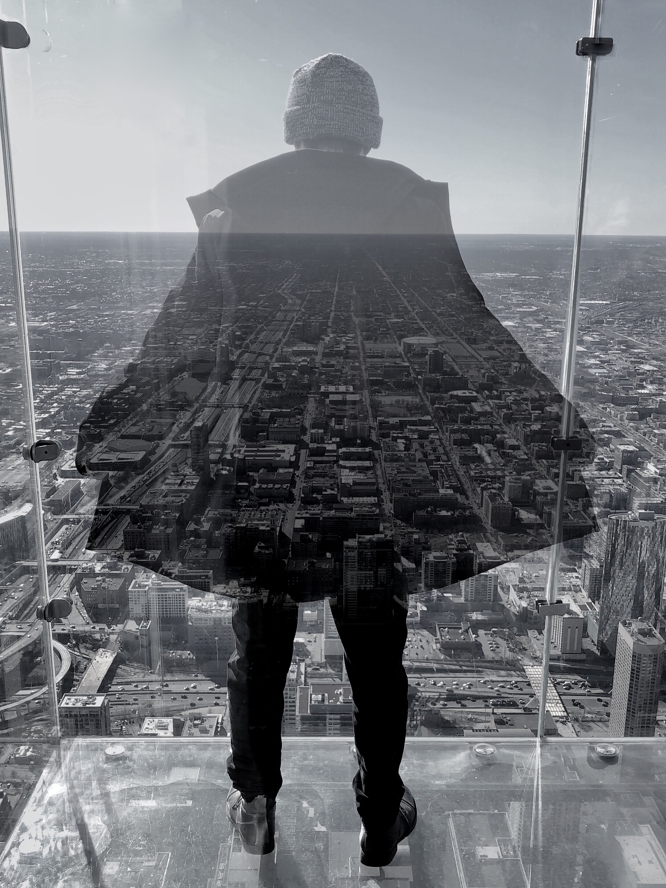
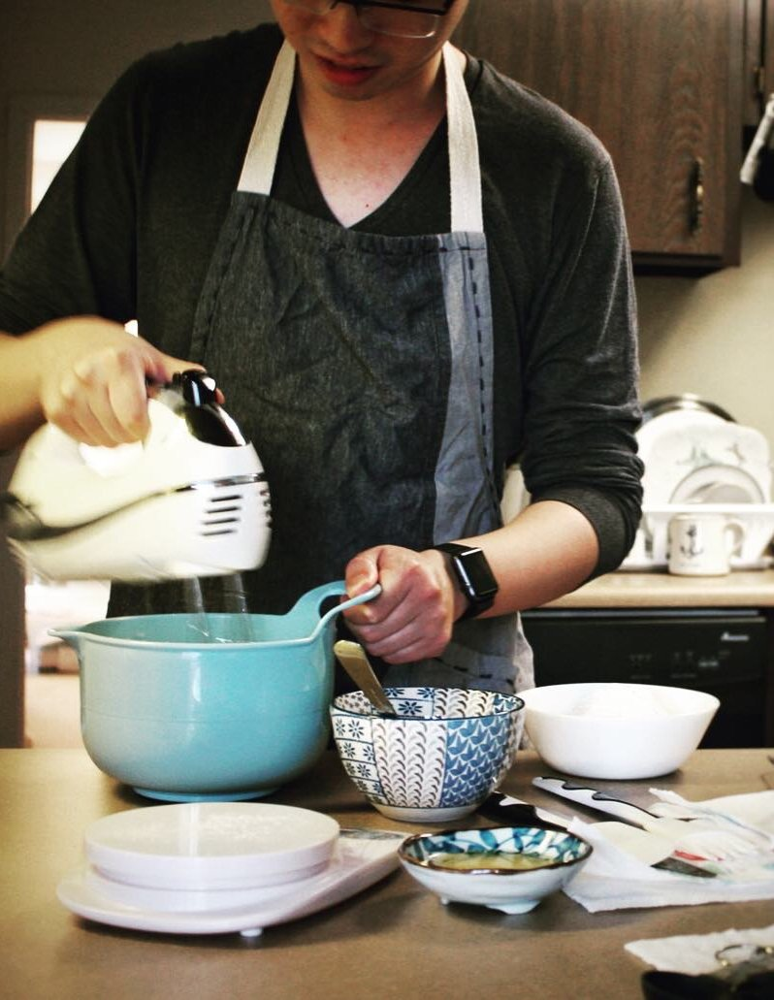

  
胡琪楠
(+01) 607-379-7405 | (+86)13776865917
教育经历
美国康奈尔大学
博士 2014-2020
主专业：分子生物学
副专业：发育生物学
北京大学
理学学士 2010-2014
专业：生物科学
研究经历
发表论文
- Qinan Hu, Mariana F. Wolfner. “The Drosophila Trpm channel mediates calcium influx during egg activation” (PNAS审议中)
- Anna H. York-Andersen*, Qinan Hu*, Ben Wood, Mariana F. Wolfner, Timothy T. Weil. “A calcium mediated actin redistribution at egg activation in Drosophila” （已提交） *共同一作。
博士学位论文（2014 至今）
《果蝇卵的激活机制和下游信号通路》
导师：Mariana Wolfner 教授，美国康奈尔大学
- 综合运用了药物抑制剂、生殖细胞系RNAi敲低和CRISPR/Cas9敲除技术，发现了Trpm蛋白是果蝇卵激活过程中介导钙离子进入细胞的通道。

- 优化了钙离子指示蛋白在果蝇生殖细胞系中的表达，并用共聚焦显微镜和激光片层扫描显微镜观测了果蝇卵激活过程中的钙离子动态。
- 开发并优化了高效的CRISPR/Cas9介导的果蝇生殖细胞系敲除和敲入技术（和美国康奈尔大学 Chun Han 教授合作项目）。
- 用显微操作针和微流体室检测了果蝇卵母细胞的机械力敏感性（和美国康奈尔大学 Jan Lammerding 教授以及Chih-kuan Tung 教授合作项目）。
- 发现了果蝇卵激活过程中的肌动蛋白重组波，及其和钙波的相互调控机制（和英国剑桥大学 Timothy Weil 教授合作项目）。
- 使用Argonne国家实验室的X光荧光显微镜检测了果蝇卵激活过程中包括锌在内的金属元素含量和分布变化（和美国西北大学 Francesca Duncan 教授, Teresa Woodruff 教授以及Thomas O’Halloran 教授合作项目）。
学士学位论文（2013 – 2014）
《DNA结合蛋白JBP1羟化酶结构域的的纯化和活性分析》
导师：伊成器教授，北京大学
- 设计合成了7个JBP1催化结构域的截断蛋白表达载体。
- 尝试了多种方法纯化不可溶蛋白。
- 成功纯化了2个MBP融合截断蛋白并用HPLC检测了其活性。
暑期研究实习（2013）
《营养缺乏诱导的自噬条件下MAP4K3介导的TFEB蛋白磷酸化研究》
导师：Albert La Spada 教授，美国加州大学圣地亚哥分校
- 优化了TFEB和溶酶体免疫荧光显微成像和共定位技术。
- 分析了TFEB serine 3位置的仿磷酸化效应。
- 使用免疫共沉淀筛选了3个MAP4K3可能的相互作用蛋白。
学术交流
- 海报：“Dissecting the triggers of calcium wave during Drosophila egg activation”, Cornell/Pittsburgh Reproductive Genomics Symposium, 2018
- 海报：“Dissecting the triggers of calcium wave during Drosophila egg activation”, Gordon Research Conference for Fertilization and Activation of Development, 2017
- 海报：“Dissecting the mechanisms of calcium wave during Drosophila egg activation”, The Allied Genetics Conference, 2016
其他经历
获奖经历
- George P. Hess 差旅经费奖，康奈尔大学， 2019
- Mann 杰出研究生奖，入围，康奈尔大学， 2019
- 研究生院差旅经费奖，康奈尔大学， 2018
- 本科生科研项目，二等奖，北京大学， 2014
学术指导
- “Choose Development!”本科生暑期科研项目导师， 2018.6 – 2018.9
- BioMG2801 遗传学实验课助教, 2016.1 – 2016.5
编程技能
- R
- Python
- MySQL
- HTML5/CSS3
专业技能培养
- 零基础网页设计入门，自学完成Coursera上美国密歇根大学开设的5门课的专精课程。专精证书于2019年6月8日获得（HTML5, CSS3, JavaScript, 响应式网页设计）。
- R语言环境软件开发， 自学完成Coursera上美国约翰霍普金斯大学开设的5门课的专精课程。专精证书于2019年4月30日获得 （面向对象程序设计，R数据包开发，可视化工具开发）。
- Python数据科学导论，自学完成Coursera上美国密歇根大学开设的课程。课程证书于2019 年4月13日获得（Python编程，numpy数据包，pandas数据包）。
- 数据科学，自学完成Coursera上美国约翰霍普金斯大学开设的10门课的专精课程。专精证书于2019年1月11日获得（R语言编程，数据分析，回归模型，markdown语言，实用机器学习，tidyverse数据包，ggplot2数据包）。
- 机器学习，自学完成Coursera上美国斯坦福大学开设的课程。课程证书于2018年3月28日获得。
“If the 20th century was the century of physics, the 21st century will be the century of biology.”